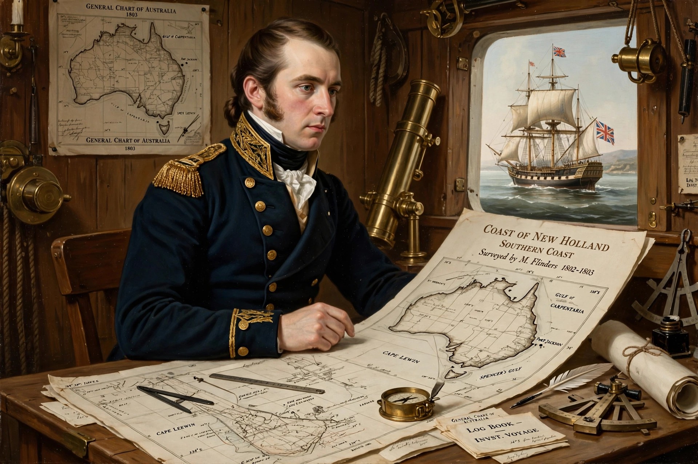

 | |
| Born | 16 March 1774, Donington, Lincolnshire |
|---|---|
| Died | 19 July 1814, London |
| Occupation | Navigator, cartographer |
Matthew Flinders (1774–1814) was an English navigator and cartographer who led the first inshore circumnavigation of Australia and is credited with popularising the name "Australia".
Flinders sailed with William Bligh, explored with George Bass — proving Tasmania (Van Diemen's Land) an island via Bass Strait — and commanded HMS Investigator (1801–1803) surveying the south coast, meeting Nicolas Baudin at Encounter Bay, and circumnavigating the continent.
Detained by the French on Mauritius for over six years on his return voyage, he wrote A Voyage to Terra Australis, published the day he died. His cat Trim is celebrated in statues. Numerous places bear his name, including Flinders Ranges and Flinders University.